Sports Climbing
3-2. 암벽의 형태
- 루프(roof)
천장 형태의 암벽을 말한다. 이를 등반하려면 상체 근력이 좋아야 한다.
 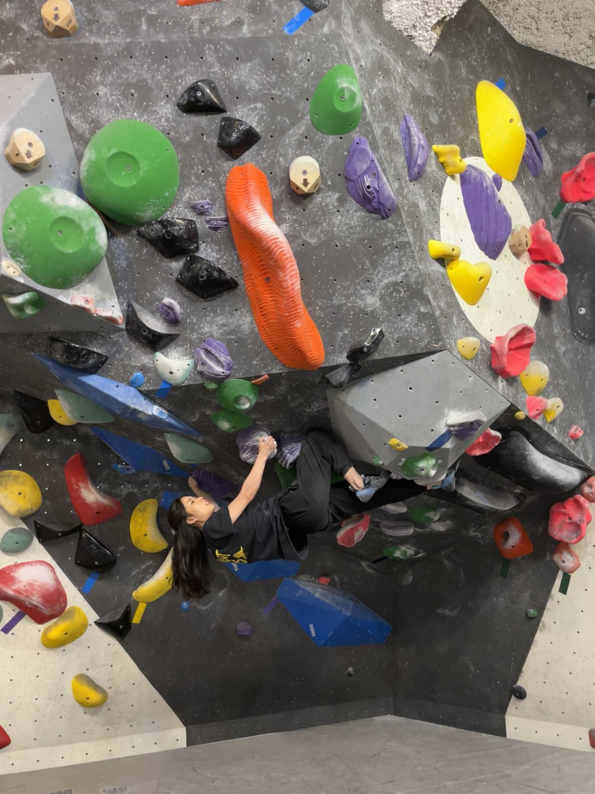
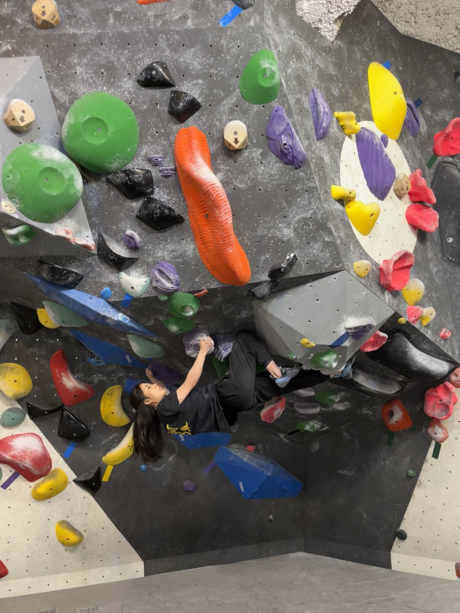
- 오버행(overhang)
수직 이상의 경사를 갖는 암벽이다. 루프보다 경사가 낮지만 그래도 상당한 경사이다.
루프를 포함한 수직 이상의 경사를 가진 벽에서는 코어가 단단히 받쳐주지 않으면 팔다리를 함께 이용하여 짝힘을 만들기 어렵다.
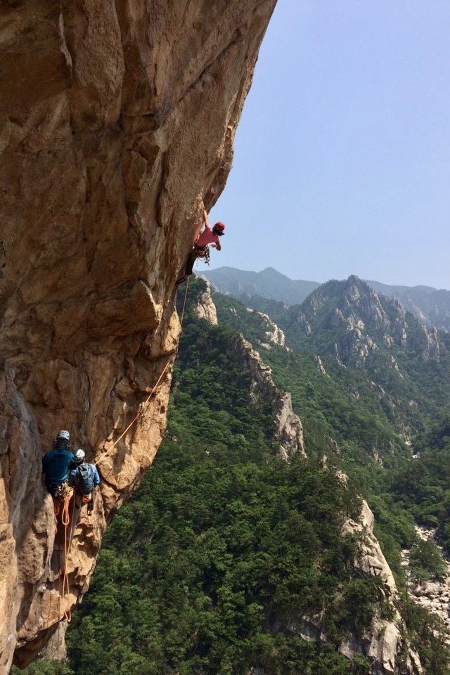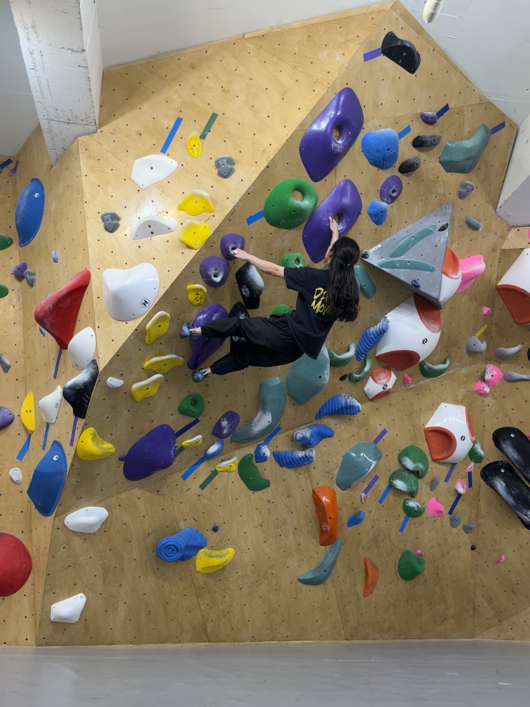
- 슬랩(slab)
수직 이하의 암벽이다. 큰 암벽 돌기가 없는 편이기 때문에 암벽화의 마찰력을 이용하여 올라야 한다.
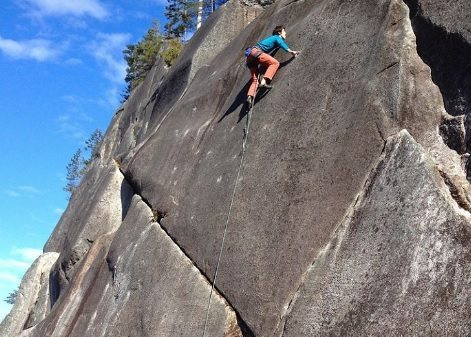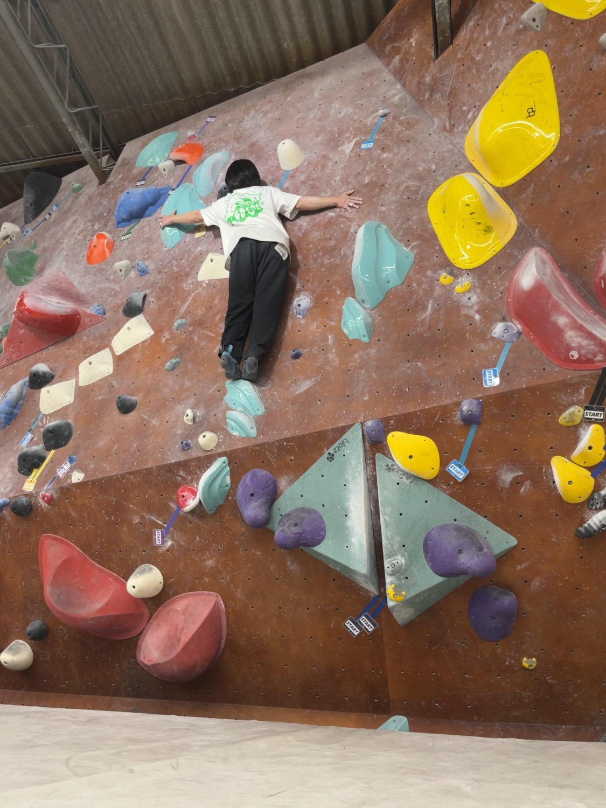
- 칸테(독: Kante)
바위벽의 튀어나온 모서리. 레이백으로 오른다.
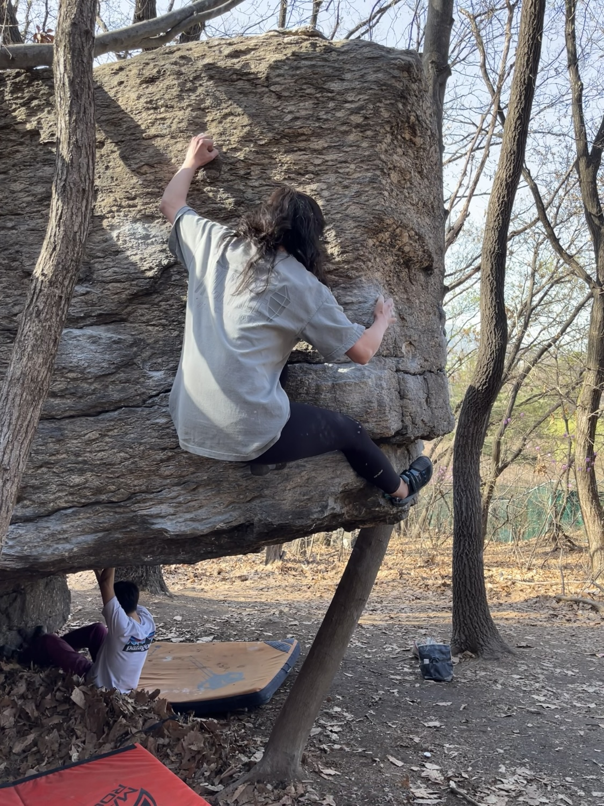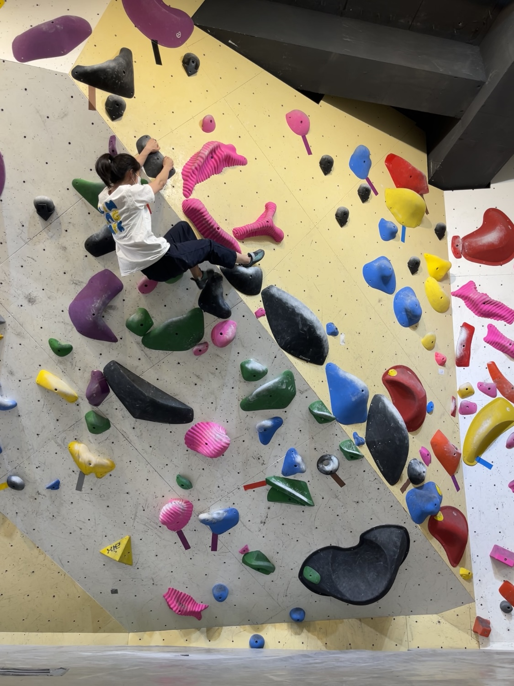
- 디에드르(프: dièdre)
책을 펼쳐둔 것처럼 생긴 암벽의 모서리이다. 오포지션이나 일반적인 등반으로 오른다.
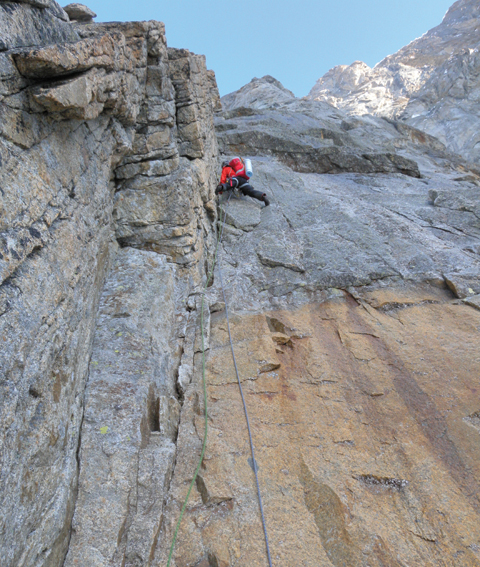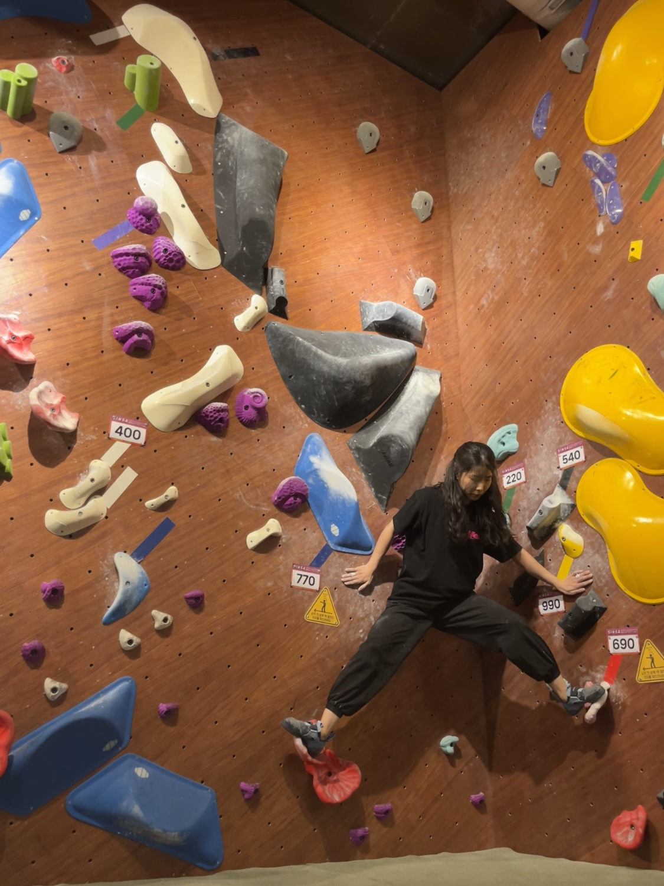
- 크랙(crack)
바위 틈이다. 주로 오포지션과 재밍을 이용한 기술을 이용한다.
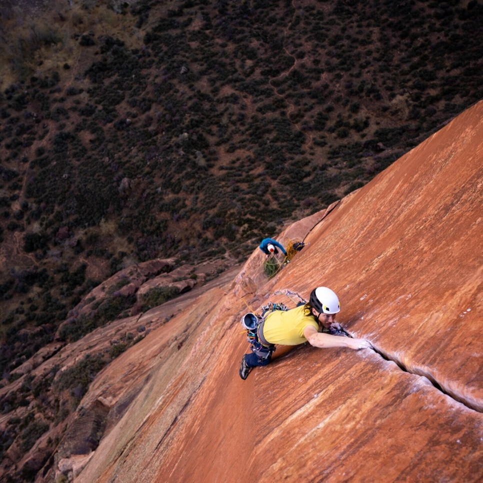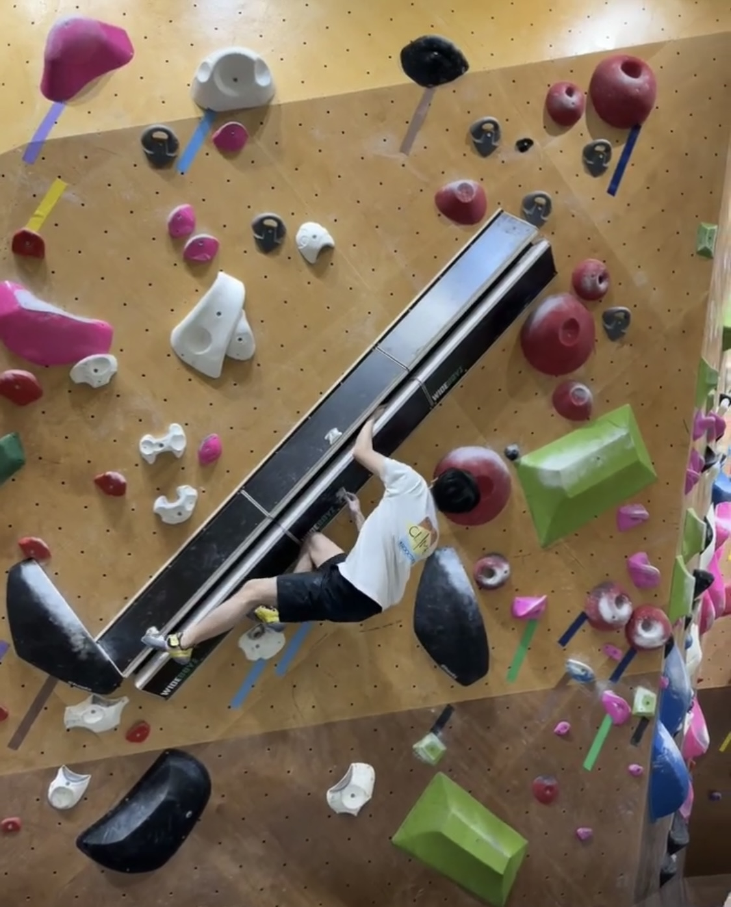